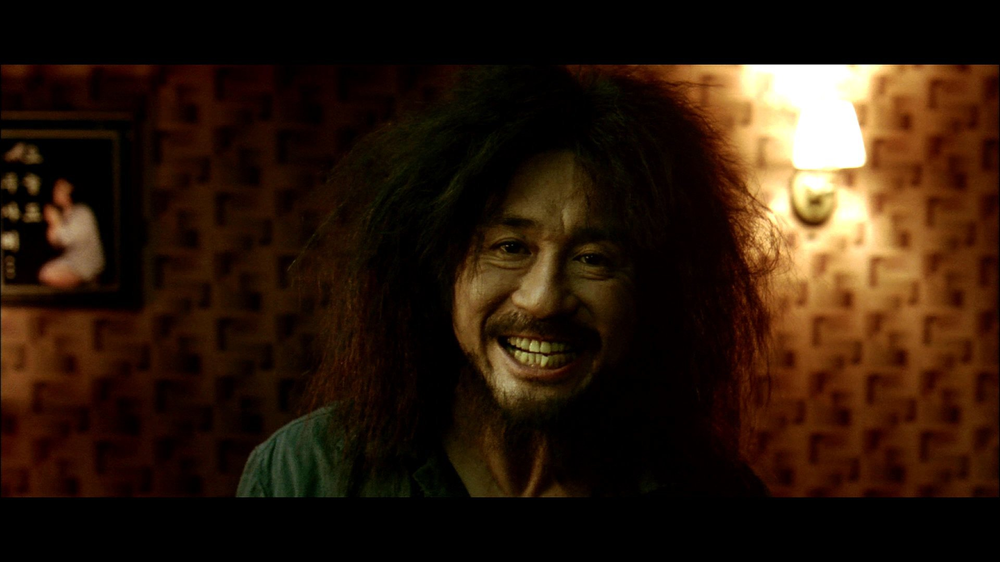

한국 영화
어떻게 사랑이 변하니?
(2001)
감독 : 허진호
장르 : 멜로 , 드라마
출연 : 유지태 , 이영애 등
제작된지 20년이 훌쩍 넘은 작품인 "봄날은 간다" 입니다.
명대사인 "라면 먹고 갈래요 ?"는 모르는 사람이 없을겁니다.
배경은 90년도에 저가 태어나지도 않은 그 시대만의 감성에,
시골 청년의 서투른 사랑과 도시 소녀의 능숙한 사랑의 스토리가 저에겐 크게 와닿았습니다.
나의 한줄평
' 20년 넘은 영화인데도 전혀 촌스럽지않 애틋한 설렘과 괜히 내가 주인공이 된 기분. '
중구형.. 거 장난이 너무 심한거 아니오 ?
(2013)
감독 : 박훈정
장르 : 느와르 , 범죄
출연 : 이정재 , 최민식 , 황정민 , 박성웅 등
2013년에 개봉한 느와르 영화입니다.
영화의 장르도 그렇고 민감한 주제인 "조직폭력배"를 다루기 때문에 호불호가 많이 갈리지만,
영화의 몰입감 , 배우들의 명연기만큼은 누구나 인정하는 작품입니다.
나름 등장인물들 간의 심리묘사도 잘 다뤘고, 작중 "담배"가 굉장히 많이 등장하는데,
단순히 극중 묘사로 담배를 태우는 것이 아닌 등장인물들의 궁극적인 목표인
신세계에 도달하는 것의 상징이라고도 생각이 듭니다.
나의 한줄평
' 느와르 영화를 보고싶다 ! 그러면 신세계는 필수코스 '
사망자인데요 , 사망을 안 했어요.
(2006)
감독 : 봉준호
장르 : 스릴러 , SF
출연 : 송강호 , 변희봉 , 박해일 , 배두나 등
한국영화의 대표적인 감독인 봉준호 님의 작품입니다. 장르는 스릴러이긴 하지만,
기존의 클리셰를 깨고 코미디 , 사회풍자까지 연출을 하는 것에 굉장히 놀라웠습니다.
또한 당시 한국영화의 연출방식은 CG를 그다지 사용하지 않았는데 이 작품은 스토리 뿐만 아니라
어색하지 않은 CG , 뛰어난 음향효과가 아직까지도 고평가를 받고있습니다.
이 작품의 핵심은 기존 영화들의 "클리셰"를 완전히
깨버렸다는것이라고 생각 합니다.
나의 한줄평
' 어렸을 때 본 괴물의 무서움은 아직까지도 기억에 남는다.. '
가장 완벽한 계획이 뭔지 알아 ? 무계획이야 .
(2006)
감독 : 봉준호
장르 : 범죄 , 블랙 코미디 , 스릴러
출연 : 송강호 , 이선균 , 조여정 , 박소담 ,최우식 등
제가 선택한 2위 작품도 봉준호 감독님의 작품입니다. 기생충은 굉장히 유명한 작품인데요.
권위있는 칸 영화제에서 황금종려상을 수상하며
한국 뿐만 아니라 전 세계적으로 인정받은 작품입니다.
저는 이 영화를 다 보고 충격 때문에 하루동안 여운이 가시질 않았습니다.
영화의 분위기 반전요소, 별거 아닌것 같은 연출에 많은 의미가 담겨있고 또 해석을 하는 맛이 있습니다.
작품을 다 보고나면 왜 제목이 기생충이였는지 다시금 생각해주는 작품이였습니다.
나의 한줄평
' 전혀 예측이 되지않는 스토리 , 보고나서 해석하는 재미가 있다. '
누나하고 난 다 알면서도 사랑했어요 . 너희도 그럴수 있을까?
(2003)
감독 : 박찬욱
장르 : 미스터리 , 스릴러 , 범죄
출연 : 최민식 , 유지태 , 강혜정

대망의 1위인 올드보이 입니다.
충격적인 촬영 기법, 스토리, 들으면 누구나 아! 하는 OST, 잘못하면 논란이 될수도 있는 소재이지만,
감안 하더라도 한국 영화 역사에 길이남을 작품이라고 생각합니다. 그리스 신화중 하나인 "오이디푸스 신화"를
오마쥬를 한것과 같은 연출, 인간의 복수심을 가장 극적으로 연출한 명작이라고 생각합니다.
원작은 일본의 한 만화인데, 올드보이가 워낙 명작으로 평가받아 외국에서도 리메이크를 한 사례가 있습니다.
또한 최민식 배우님과 유지태 배우님의 명연기가 이 작품을 더욱 극대화 했던 것 같습니다.
나의 한줄평
' 보는 내내 감탄밖에 안나오는, 보고나면 충격밖에 안남는 '
감사합니다 !
지금까지 제가 본 한국영화중 제일 감명깊게 본 영화들을 나열해봤는데,
글을 쓰면서 느낀것이 순위를 정하는 것이 어려울 만큼 정말 명작들이라고 생각합니다.
다른 나라의 영화 리뷰도 보고 싶으시다면 사람을 클릭 해주세요 !